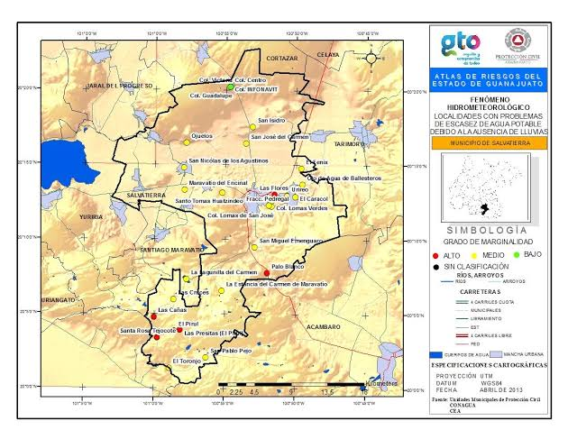

Cómo Visitar Salvatierra y Disfrutar al Máximo


La mejor época para visitar Salvatierra es entre octubre y abril, cuando el clima es más fresco y agradable.

Puedes llegar en autobús desde ciudades cercanas como Morelia, Querétaro y Celaya. Si vienes en coche, las carreteras están en buen estado.
Salvatierra ofrece diversas opciones de hospedaje, desde hoteles boutique hasta posadas tradicionales.
No te pierdas las tradicionales carnitas, gorditas y los dulces típicos en el Mercado Hidalgo.
Pasea por el centro histórico, visita las haciendas antiguas, disfruta de la naturaleza en el Puente de Batanes y prueba la comida local.